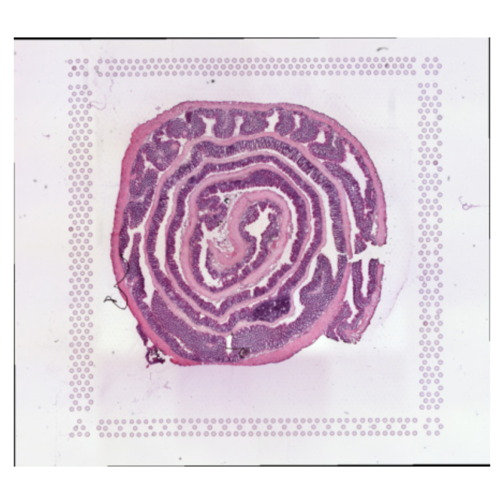
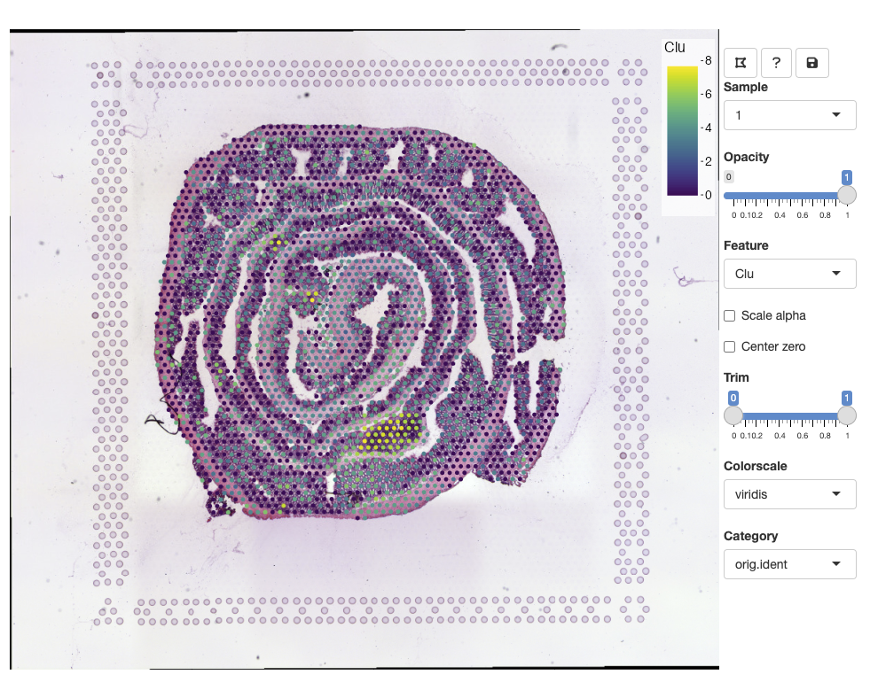
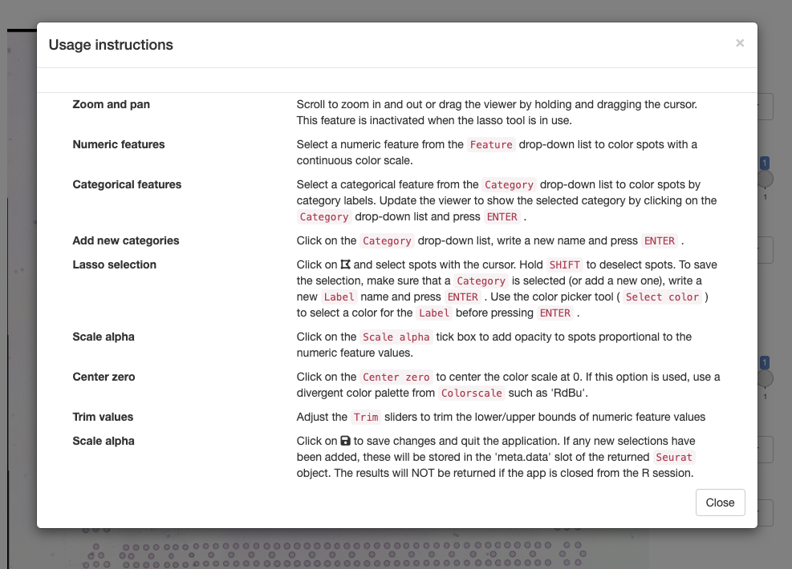
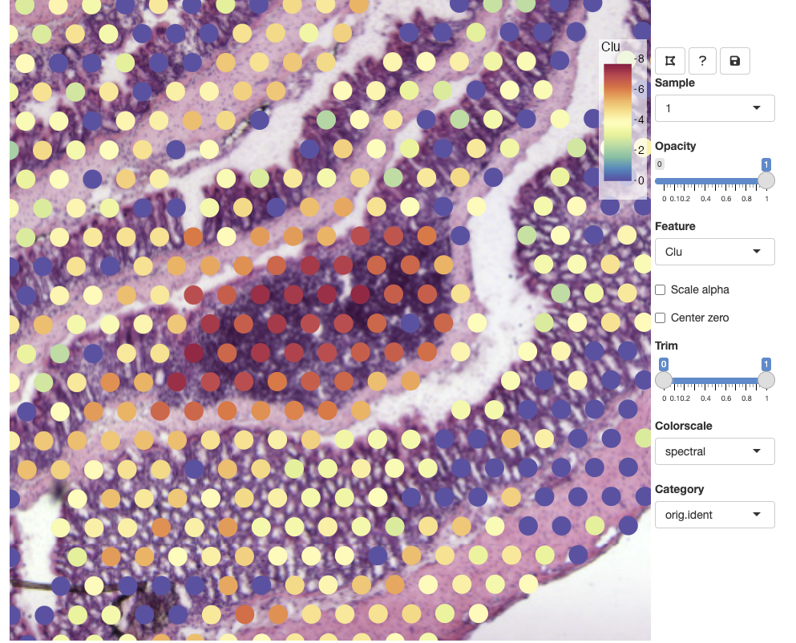
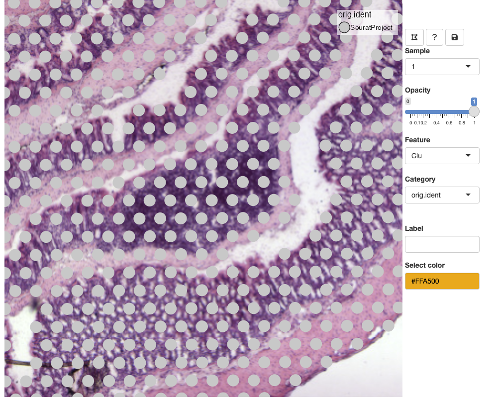
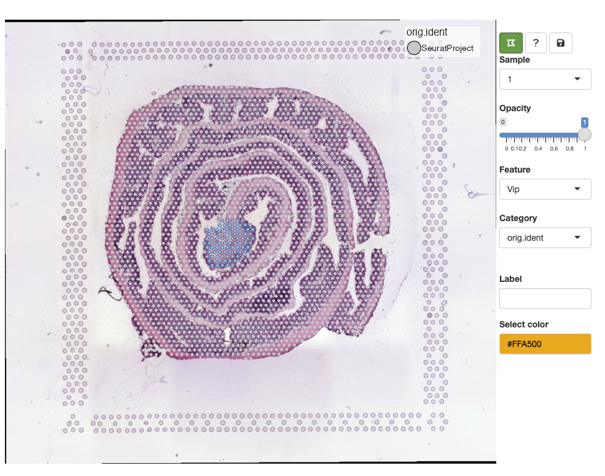
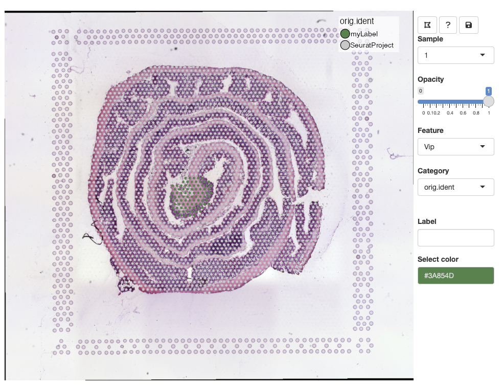

Visualization of categorical features
feature_viewer.RmdSTUtility2’s Feature Viewer is an interactive
application that can be run directly from R which makes it possible to
interactively visualize features present in a Seurat object
and it also makes it possible to manually annotate spots.
Some of the functionality is similar to what you can do with the Loupe
Browser or the ST viewer but if
you are using Seurat (or any other R package) for your
analyses, it can be cumbersome to import/export results back and forth
from R.
Having the option to interactively explore an SRT dataset can be very useful. For example, a common task is to manually annotate spots based on morphological features of an H&E image which can only be done through an interactive application. Moreover, when we map gene expression to our H&E images in R, it is often difficult to associate their patterns with small morphological structures. At a quick glance, the expression of marker genes associated with small structures might appear random in plots, and it is only when we zoom in at the H&E image that we can see the tissues and cells that they are associated with.
Feature viewer
Using our mouse brain dataset as an example, we’ll go through how to
use the FeatureViewer application.
se <- readRDS(system.file("extdata/mousecolon", "se_mcolon", package = "STUtility2")) |>
LoadImages()## ## ── Load H&E images ──## ## ℹ Loading image from /private/var/folders/91/twz8ld_x3f98sr9yc2hq9xpn47blx2/T/RtmprkM4Jp/temp_libpath183557ba4179/STUtility2/extdata/mousecolon/spatial/tissue_hires_image.jpg## ℹ Scaled image from 1804x2000 to 400x443 pixels## ℹ Saving loaded H&E images as 'rasters' in Seurat object
ImagePlot(se)
To initiate the viewer, we call the FeatureViewer
function with our Seurat object as input. When the app is
closed, any changes made in the app will be returned to our
Seurat object, so we need to call
se <- FeatureViewer(se). it is important to note that
the application should be exited by clicking on the save icon in the top
right corner, otherwise any changes that we’ve made will not be returned
to R.
NB: Like most functions provided in STUtility2,
FeatureViewer only works with Seurat objects
processed with STUtility2.
se <- FeatureViewer(se)The app should open in your default browser: 
To get started, you can click on the question mark icon which will give instructions on how to use the app: 
Zoom and pan
You can zoom in and out using the mouse wheel and pan by dragging
clicking and dragging the H&E image. The opacity slider allows us to
hide spots if we wish to view clear the view of the H&E image: 
Selecting features
From the Feature drop down list, we can select any numeric feature
available in our Seurat object. This includes vectors
stored in the meta.data slot as well as dimensionality
reduction vectors stored in the reductions slot. If you
have multiple assays available in your Seurat object, only
features from the active assay will be available. This is to avoid
naming conflicts as different assays can share identical feature IDs. If
you want to select raw or scaled counts, you can specify what
Assay slot to use with the slot argument in
FeatureViewer.

Other options
opacity slider: scale spot opacity.
scale alpha: scale the spot opacity of numeric features based on feature values.
Trim slider: trim lower and upper bounds of the selected numeric feature values. 0 corresponds to the minimum value and 1 corresponds to the maximum value.
Colorscale: select a color palette for numeric features.
center zero: centers the color scale at 0 which can be useful when visualizing centered values, for example principal component vectors or scaled expression. If center zero is active, it is appropriate to use a divergent color palette from ‘Colorscales’, such as
RdBu.
Category
Categorical variables stored in the Seurat object
meta.data slot are made available through the ‘Category’
drop-down list. You can select a new category or select the current
category and press ENTER to update the view.

Lasso tool
In the example above, we selected the meta.data column
called orig.ident which currently only contains one label.
When a categorical variable is selected, we get the option to add new
labels. Before we can add a new label, we need to select spots with the
lasso tool in the top left corner of the toolbar:

Select a color from the color picker, write a new label name and
press ENTER to save the changes:

One a new label has been added, it should pop up in the color legend.
Labels can share the same color, but if you wish to update the color of an existing label, you can select spots from the same selection, select a new color, write the same label name and press ENTER. This will update the color for all spots with that label.
Unfortunately, the lasso tool will freeze the current view, meaning that you will not be able to zoom and pan while the lasso tool is active. Deactivate the lasso tool to enable navigation in the viewer.